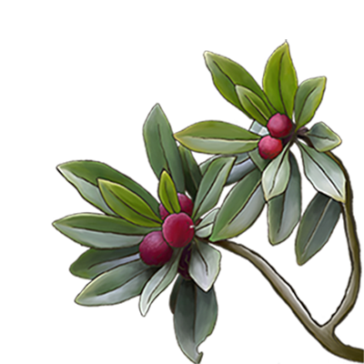
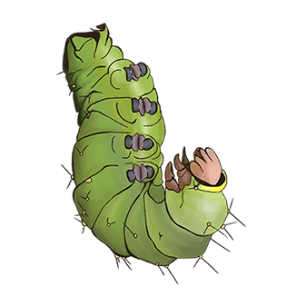
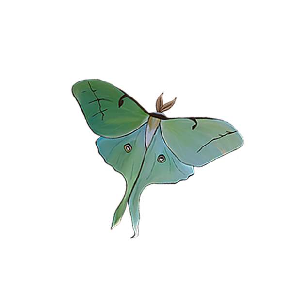

David Johnathan Roth came up with this font as a version of letter forms from original print making in English print shops. Warbler is meant to be a softer serif font that practices restraint and delicate touches.
Light, Airy, Free of Excess, Powerful, and Delicate are all things that Roth wanted this font to be in every variation
Supported Languages include:
Warbler's Two Variable Axies
AaBcCcDdEeFfGgHhIiJjKkLlMmNnOoPpQqRrSsTtUuVvWxYyZz
1234567890
!@#$%^&*()
AaBcCcDdEeFfGgHhIiJjKkLlMmNnOoPpQqRrSsTtUuVvWxYyZz
1234567890
!@#$%^&*()